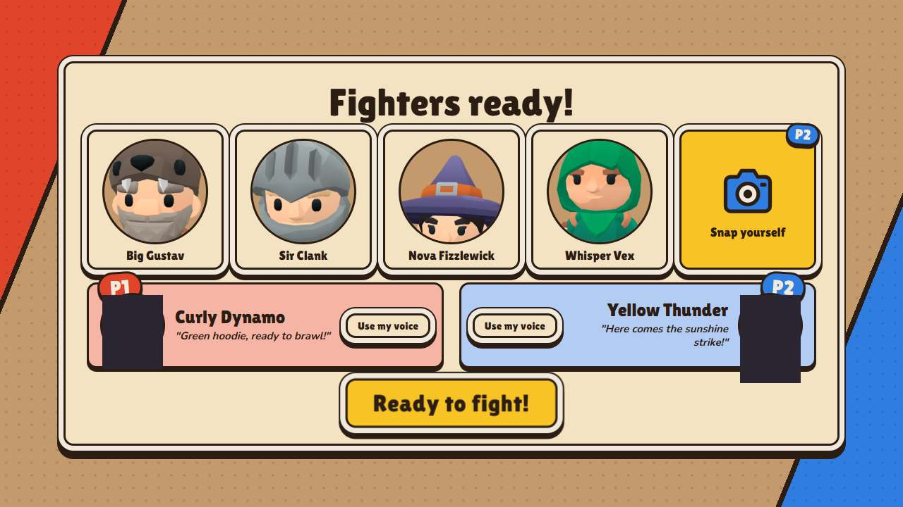
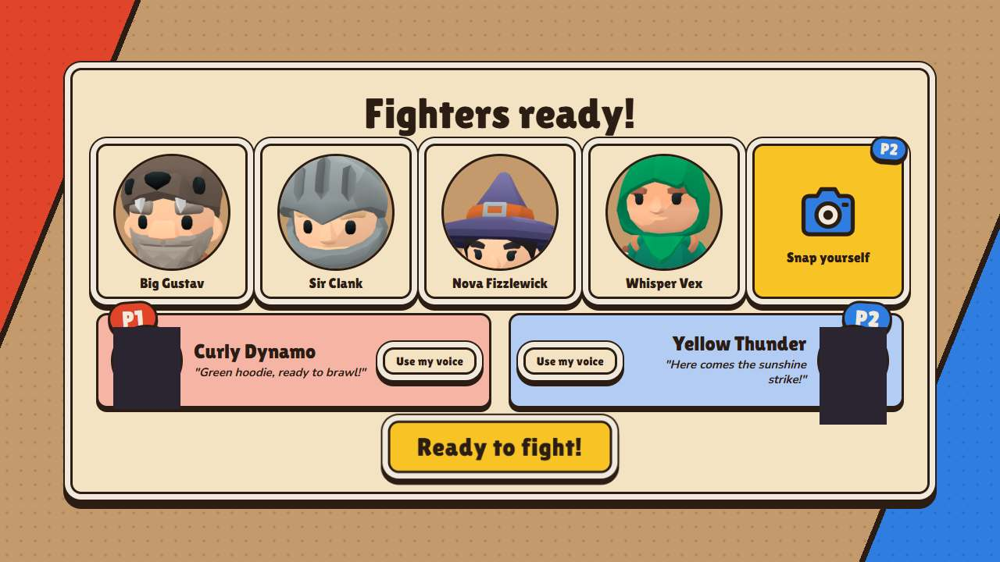

Photo → objet jouable, dans le vrai jeu
0/11 critères verts
| Critère | Verdict | Mesure |
|---|---|---|
| Arsenal : la carte se remplit (nom, catégorie, stats, physique) pour chaque photo | ROUGE | 0 cartes ; physique sur l'arme : 0 ; physique affichée sur la carte : 0 |
| On valide sans attendre le sticker ; le sticker arrive ensuite et passe sur l'arme en match | ROUGE | validés avant le sticker : 0/0 ; stickers arrivés : 0 ; sur l'arme en match : 0 |
| 2 persos tirés de photos (visages fictifs) | ROUGE | match non atteint |
| Match en écran scindé, chaque joueur avec SES objets | ROUGE | match non atteint |
| Chaque objet en main à sa taille réelle (bornée 0,35-1,6 m, ±35 %) | ROUGE | 0/0 à la bonne taille ; chaise ? m, canette ? m |
| Chaise contre canette (toutes deux lancées) : plus de dégâts, plus de recul, plus lente, moins loin, recharge plus longue | ROUGE | plus de dégâts NON · plus de recul NON · plus lente NON · moins loin NON · recharge plus longue NON |
| Feutre, canette, tabouret, chaise : plus c'est lourd, plus ça frappe et recule, plus c'est lent et long à recharger | ROUGE | objets manquants |
| Un objet fragile se brise (éclats à l'impact) | ROUGE | aucun objet fragile détecté |
| Un liquide gicle (sol glissant) | ROUGE | aucun objet liquide détecté |
| Un objet rebondissant rebondit | ROUGE | aucun objet rebondissant détecté |
| Les 10 objets d'Adem : physique plausible, lancés en match avec LEUR masse | ROUGE | tasse-verre ✗ pas de physique · chaise-bureau ✗ pas de physique · feutre-velleda ✗ pas de physique · telephone ✗ pas de physique · mocassin ✗ pas de physique · tabouret-rotin ✗ pas de physique · pendule-newton ✗ pas de physique · lampe-champignon ✗ pas de physique · roi-echecs ✗ pas de physique · montre ✗ pas de physique |
Chaise contre canette (lancées toutes les deux)
| Mesure en jeu | Chaise de bureau | Canette | Rapport |
|---|---|---|---|
| Masse (kg) | — | — | — |
| Dégâts (%) | — | — | — |
| Recul (m/s) | — | — | — |
| Vitesse (m/s) | — | — | — |
| Portée (m) | — | — | — |
| Recharge (s) | — | — | — |
| Taille en main (m) | — | — | — |
Toutes les mesures (événements du bus)
| Objet | Arme | Cat. | Masse kg | Taille réelle m | Matière | Fragile | Liquide | Rebond | En main m | Vitesse m/s | Dégâts % | Recul m/s | Recharge s | Portée m | Rebonds | Flaques | Coups | Sticker |
|---|
Maillons cassés relevés
- arrêt du parcours : match 1 : persos : locator.click: Timeout 30000ms exceeded.
Captures
persos



échecs
